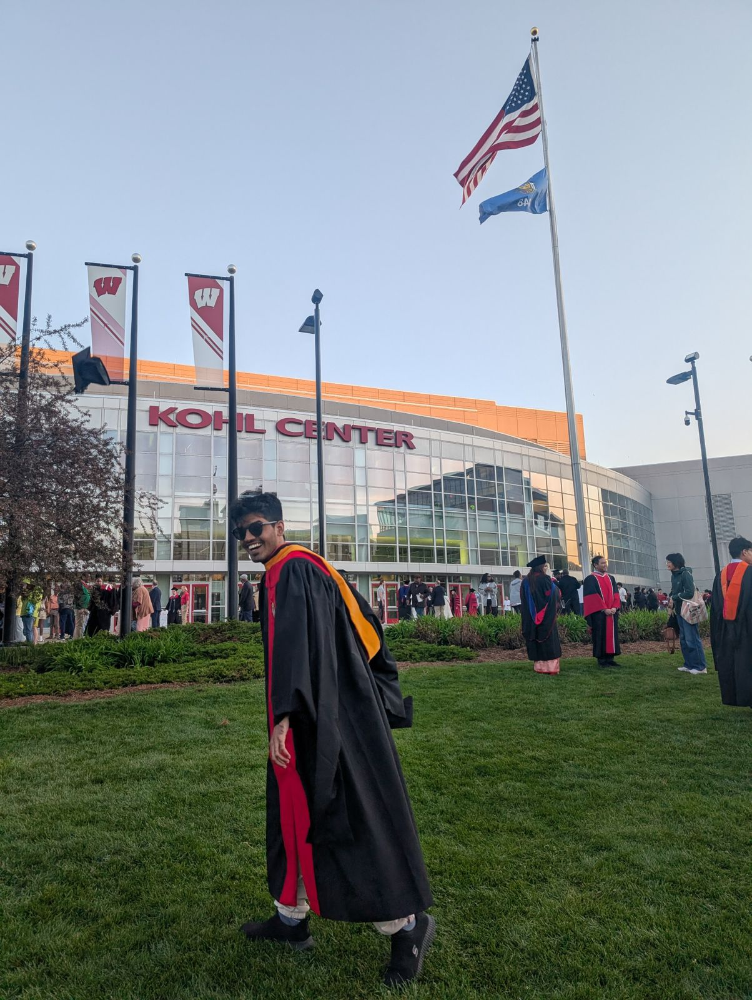

Mahesh Ramesh
M.S. Computer Science, University of Wisconsin-Madison
I work on cooperative multi-agent reasoning, reinforcement learning, and evaluation of large language models. Currently working on evaluating reinforcement learning generalization and scaffold robustness.
I am interning at Kalpa Labs (YC F25), working on large-scale generalized audio model training. Previously, I was a Quant Researcher at JP Morgan Chase and interned at WorldQuant. I completed my B.Tech at IIT Madras.
News
- Apr 2026 New paper on LLMs as cooperative Hanabi agents.
- Feb 2026 Started as ML Intern at Kalpa Labs (YC F25) in San Francisco.
- 2025 CuRe accepted at ICCV 2025.
- 2025 CuRe accepted at CVPR DemoDiv Workshop (Oral).
- 2025 Hanabi paper accepted at NeurIPS 2025 LAW Workshop.
- 2024 MABViT accepted at Deployable AI Workshop, AAAI 2024 (Oral).
Publications
-
Sparks of Cooperative Reasoning: LLMs as Strategic Hanabi AgentsNeurIPS 2025 LAW Workshop
-
CuRe: Cultural Gaps in the Long Tail of Text-to-Image ModelsICCV 2025 · CVPR DemoDiv Workshop (Oral)
-
MABViT: Modified Attention Block Enhances Vision TransformersDeployable AI Workshop, AAAI 2024 (Oral)
Education
-
University of Wisconsin-Madison Sep 2024 – May 2026M.S. Computer Science · GPA 3.87/4.00
-
Indian Institute of Technology Madras Jul 2019 – Jul 2023B.Tech Chemical Engineering · CGPA 8.64/10
Experience
-
Kalpa Labs (YC F25) Feb 2026 – PresentMachine Learning Intern, San FranciscoLarge-scale generalized audio model training; dense and MoE architectures.
-
JP Morgan Chase & Co Aug 2023 – Aug 2024Quantitative Research Analyst, Asset & Wealth ManagementOutlier-detection for risk sensitivities; product-risk rating framework.
-
WorldQuant LLC May 2022 – Jul 2022Quantitative Research Intern, MumbaiAlpha weighting modules in C++; constrained optimization for production portfolios.
-
Dassault Aviation — IIT Madras Jan 2022 – May 2023B.Tech ThesisVAE with attention for flight telemetry augmentation; presented at RBCDSAI 2023.
Competitions & Red Teaming
- OpenAI GPTOSS-20B Red Teaming Hackathon — Honorable Mention (Top 20 / 611)
- OpenAI Bio Bug Bounty — Participant in biological risk red-teaming program
- Frontier Lab Red Teaming — Invited participant in an additional frontier model red-teaming program